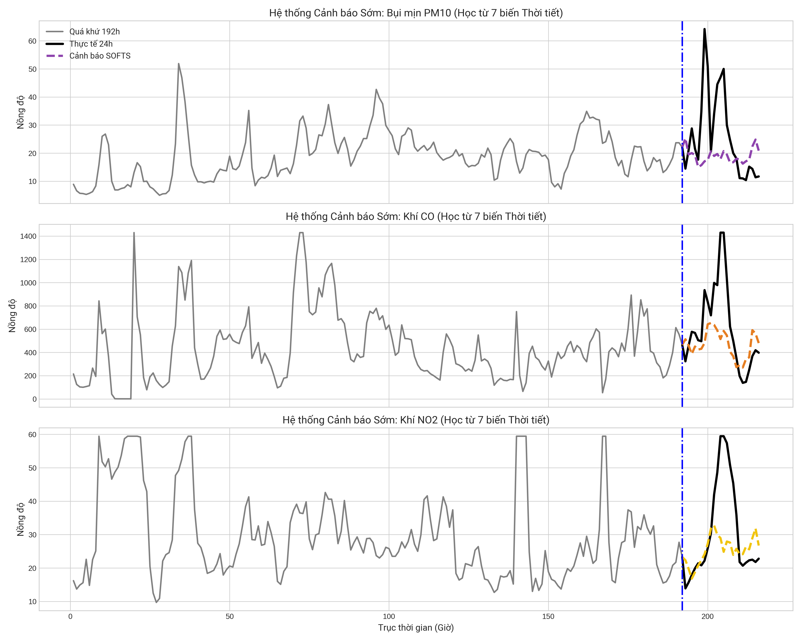
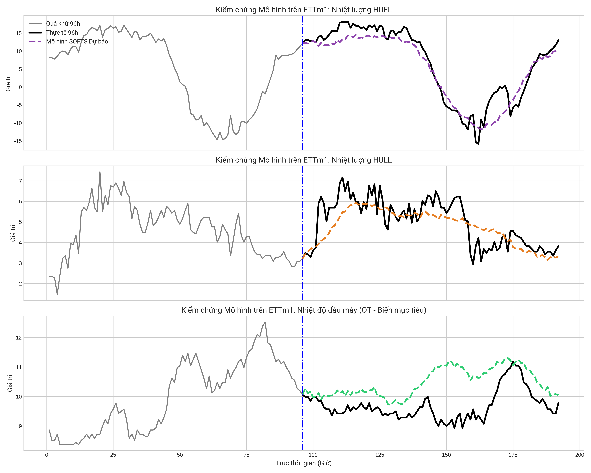
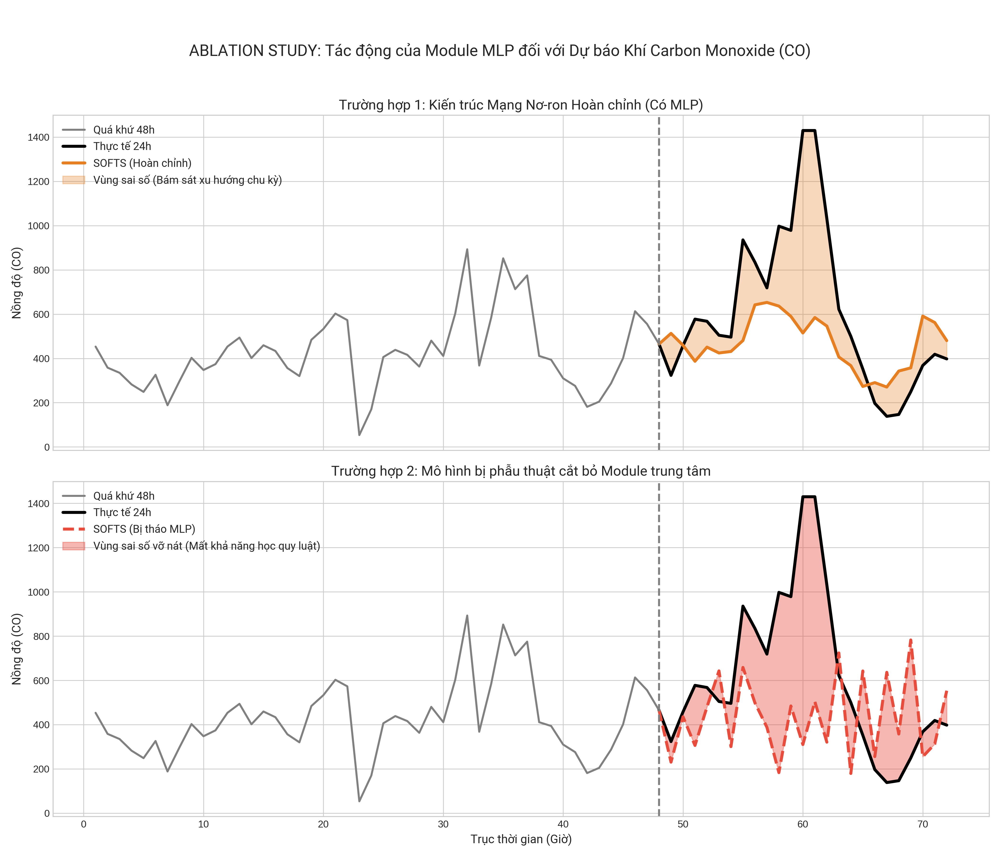
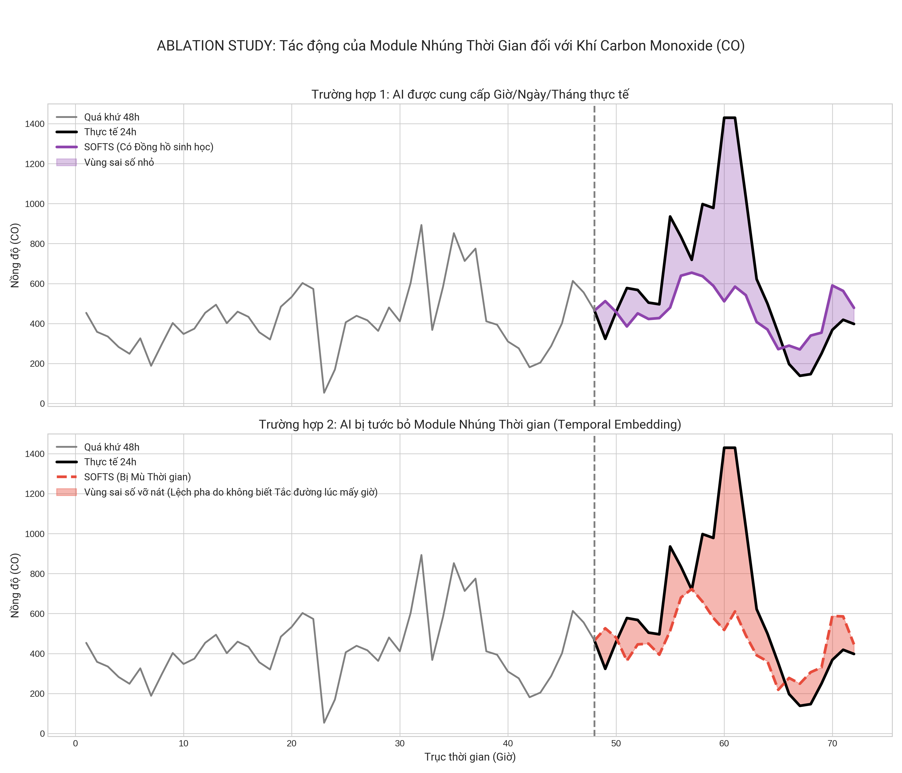

Giảng viên hướng dẫn: Ths. Trần Anh Đạt
Đề tài tập trung vào bài toán dự báo chất lượng không khí tại Hà Nội dựa trên dữ liệu chuỗi thời gian đa biến. Các biến đầu vào gồm nhóm biến ô nhiễm như PM10, CO, NO2 và nhóm biến thời tiết như nhiệt độ, độ ẩm, lượng mưa và tốc độ gió. Mô hình SOFTS được sử dụng để học xu hướng theo thời gian và khai thác mối quan hệ giữa các biến thông qua module STAR.
| Bộ dữ liệu | Mô hình | seq_len | pred_len | Số biến | Chỉ số đánh giá |
|---|---|---|---|---|---|
| ETTm1 | SOFTS | 96 | 96 | 7 | MSE, MAE |
| Hanoi Air Quality + Weather | SOFTS | 192 | 24 | 7 | MSE, MAE |
| Dataset | Model | MAE | MSE |
|---|---|---|---|
| ETTm1 | SOFTS | 0.3674 | 0.3313 |
| Hanoi Air Quality + Weather | SOFTS | 0.8658 | 10.1278 |
Kết quả cho thấy SOFTS có khả năng học xu hướng tổng quát của dữ liệu chuỗi thời gian đa biến. Tuy nhiên, trên dữ liệu ô nhiễm không khí Hà Nội, mô hình vẫn gặp khó khăn tại các thời điểm xuất hiện đỉnh ô nhiễm tăng đột biến.

Hình 1. Kết quả dự báo PM10, CO và NO2 trên dữ liệu Hà Nội.

Hình 2. Kết quả dự báo trên bộ dữ liệu ETTm1.

Hình 3. Ablation study về tác động của module MLP.

Hình 4. Ablation study về tác động của temporal embedding.